A comprehensive comparison of six training iterations for detecting potholes, cracks, and manholes on road surfaces using YOLO11.
High-level configuration comparison across all six versions at a glance.
| Version | Model | Epochs | Img Size | Optimizer | Batch | Data Split | K-Fold | TTA Eval | mAP50 (Val) | mAP50 (Test) |
|---|---|---|---|---|---|---|---|---|---|---|
| v1 | YOLO11s | 100 | 640 | RAdam | 16 | Train=Val (same) | No | No | 0.5670 | — |
| v2 | YOLO11n | 100 | 800 | RAdam | 8 | 80/20 split | No | No | 0.3910 | — |
| v3 | YOLO11s | 100 | 896 | AdamW | 8 | 75/15/10 | Yes (k=5) | Yes | 0.7110 | 0.7171 |
| v4 | YOLO11m | 200 | 896 | RAdam | 32 | 75/15/10 | No | Yes | 0.3662 | 0.3757 |
| v5 | YOLO11s | 200 | 896 | AdamW | Auto (0.8) | 75/15/10 | No | Yes | 0.4830 | 0.4316 |
| v6 | YOLO11s | 150 | 960 | AdamW | Auto (0.8) | 75/15/10 | No | Yes | 0.4584 | 0.4339 |
* v1 uses train=val set (inflated). † v3 uses only 15 val images (inflated). Fair comparison: v4–v6.
What was added, modified, or removed between each version.
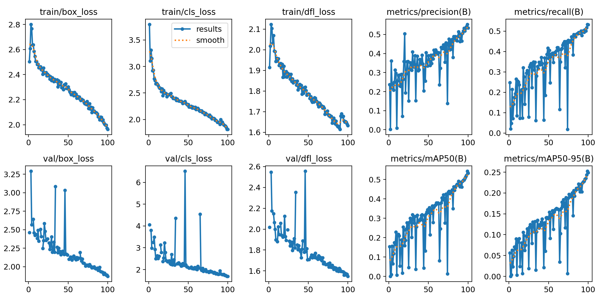
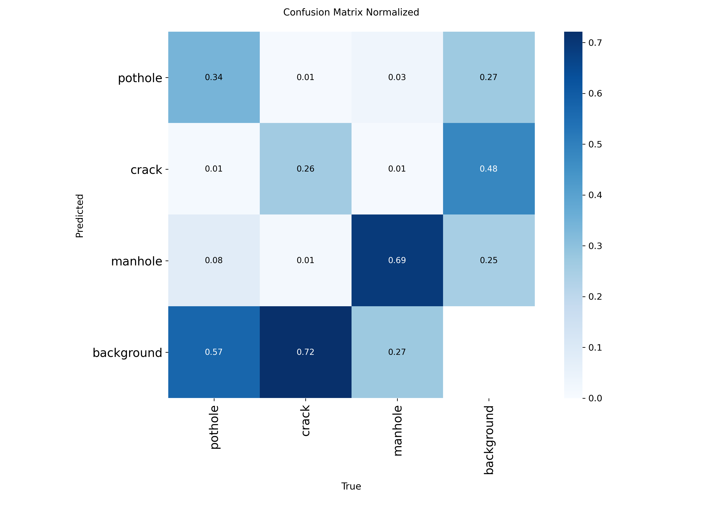
Training curves analysis: Train losses (box: 2.80 → 1.96, cls: 3.80 → 1.81, dfl: 2.12 → 1.63) decline steadily over 100 epochs using RAdam. However, because v1 has no separate validation set (train=val data leakage), the validation curves directly mirror the training process. The sharp periodic spikes in val losses reflect evaluation volatility on noisy raw batches.
Confusion Matrix & Baseline Performance: Despite being evaluated directly on the training data, the baseline YOLO11s at 640px resolution struggled severely with fine-grained defects. 72% of cracks and 57% of potholes were missed entirely to background. Only manholes achieved high recall (69%).
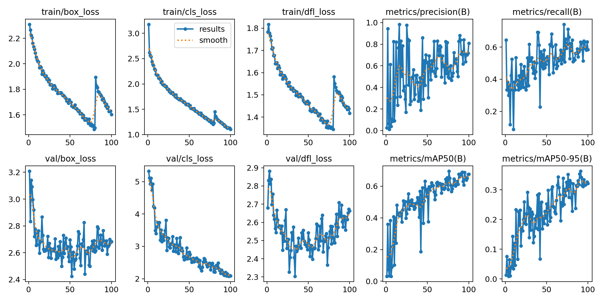
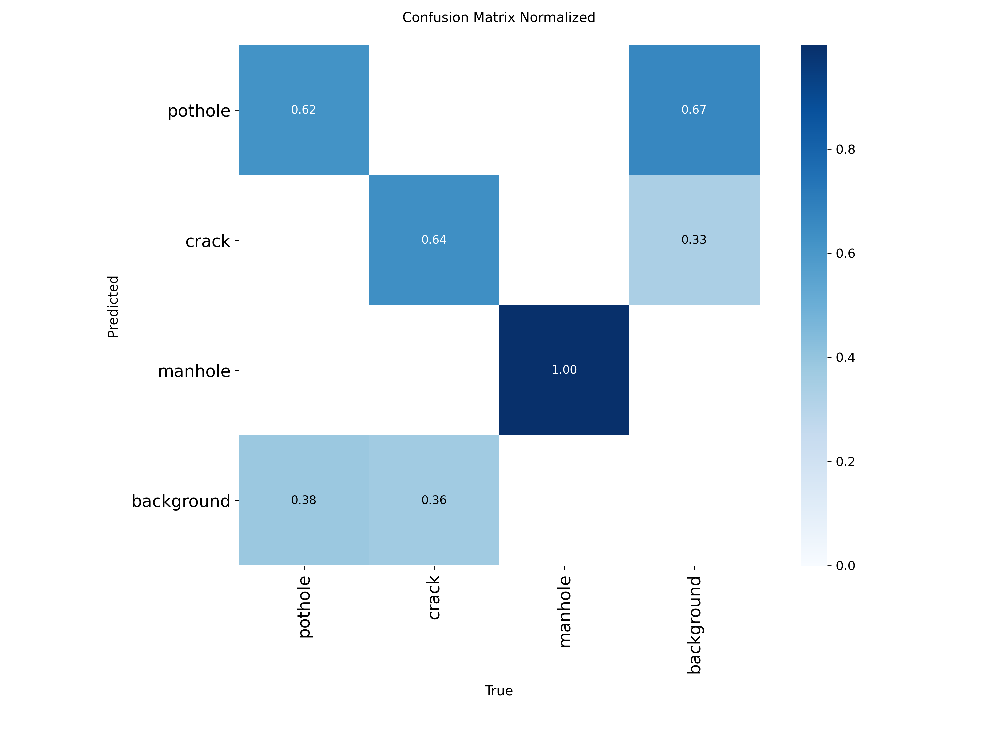
Training loss curves (box, cls, dfl) all drop steadily, confirming effective learning. A notable sharp spike at epoch ~80 in train losses and val losses is visible — this corresponds to the K-Fold cross-validation fold boundary where the model resets to a new train/val split. After the reset, losses recover quickly and continue decreasing.
Critically, the mAP50 curve is still climbing at epoch 100 (ending at ~0.65–0.71) and has not plateaued, suggesting the model had not yet converged when training stopped. With a longer training budget (e.g., 200+ epochs per fold), v3 could likely achieve even higher performance. Val losses also plateau but do not increase, meaning there is no overfitting at this stage.
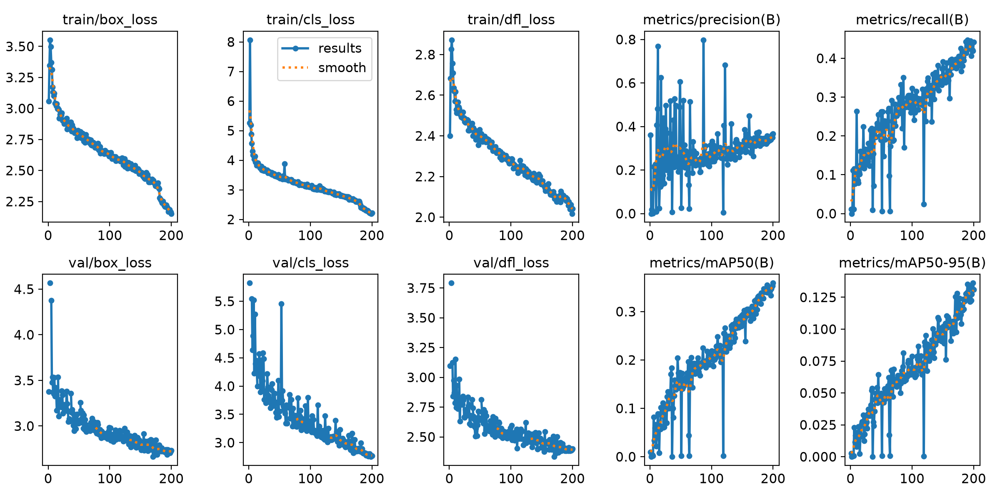
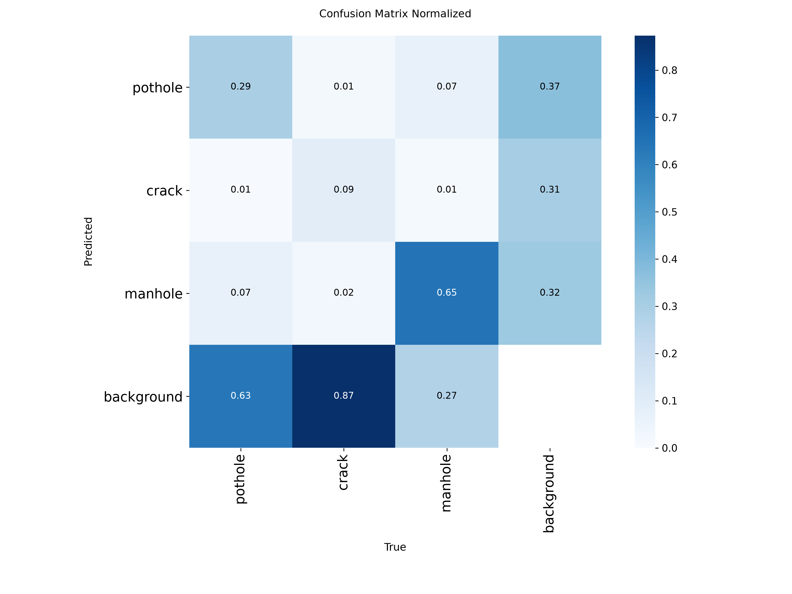
The training curves tell a stark story of severe underfitting. While train losses (box, cls, dfl) decrease smoothly over 200 epochs, the val losses plateau at a very high level — val/box_loss never goes below ~2.9 and val/cls_loss hovers above 3.0. The large gap between train and val losses confirms the model fails to generalize.
The mAP50 curve only reaches 0.37 after 200 epochs and is still climbing — the model simply needed far more training data than was available for YOLO11m (20M params). Precision oscillates wildly with no stable trend. This version confirms that scaling up the model architecture is counterproductive when the dataset is small.
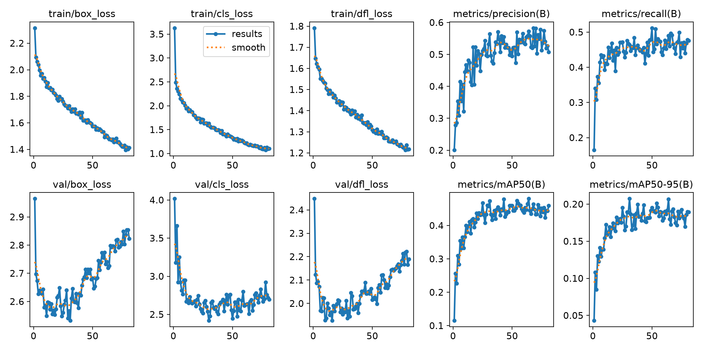
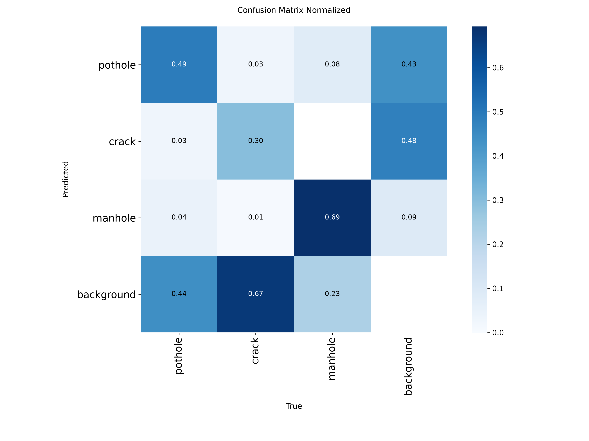
v5 shows dramatically improved training dynamics versus v4. The switch to YOLO11s and AdamW causes losses to converge much faster — train losses reach stable low values by epoch ~30. Early stopping triggered at ~66 epochs (out of 200 configured), meaning the model stopped learning before the set limit.
However, the val/box_loss begins rising after epoch ~40 (from 2.55 up to ~2.85), and val/cls_loss also trends upward from epoch ~30 — a clear overfitting signal. The mAP50 plateau (~0.43–0.48) reflects this: the model reached its generalization limit with the current augmentation strategy (mixup, copy_paste, rotation).
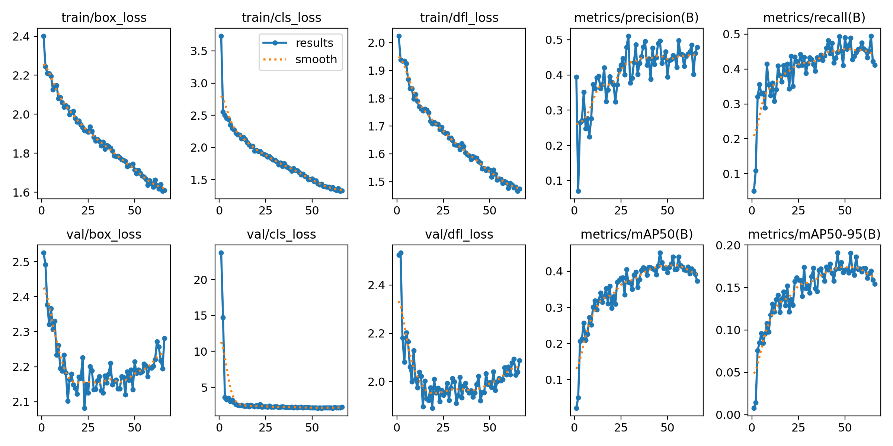
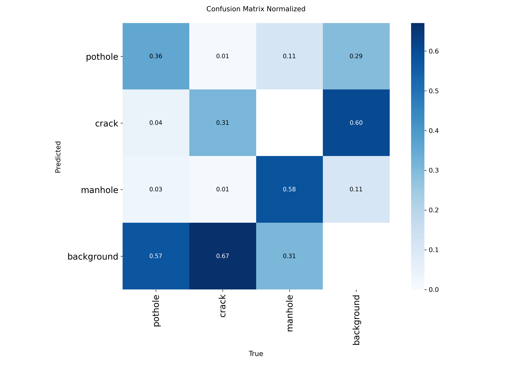
The most striking feature is the massive spike in val/cls_loss at epochs 2–3 (reaching ~20.0), followed by a rapid drop to ~4.0 by epoch 10. This is caused by severe class imbalance in early batches — when the first few validation batches contain very few positive examples of one class, AdamW temporarily amplifies the classification error. It resolves on its own and is expected behavior with imbalanced datasets and high initial LR.
After the initial spike, training proceeds cleanly. Train losses decline steadily. Val losses stabilize after epoch ~15 with a slight upward drift in val/box_loss near the end — a milder overfitting signal than v5. The mAP50 ends at ~0.41 with a slight upward trend at cutoff, suggesting patience=20 stopped training slightly before convergence. Despite this, test mAP50 (0.4339) marginally beats v5 (0.4316) — simpler augmentation and higher resolution improved generalization.
Per-class precision, recall, F1, and mAP50 across all versions.
| Version | Model | Precision | Recall | mAP50 (All) | mAP50-95 | Eval Set |
|---|---|---|---|---|---|---|
| v1 | YOLO11s | 0.6542 | 0.4554 | 0.5670 | 0.2984 | Val (=Train) |
| v2 | YOLO11n | 0.421 | 0.422 | 0.391 | 0.151 | Val (985 imgs) |
| v3 | YOLO11s | 0.834 | 0.628 | 0.711 | 0.370 | Val (15 imgs)* |
| v4 | YOLO11m | 0.360 | 0.449 | 0.366 | 0.138 | Val (294 imgs) |
| v5 | YOLO11s | 0.576 | 0.474 | 0.483 | 0.206 | Val (294 imgs) |
| v6 | YOLO11s | 0.503 | 0.457 | 0.458 | 0.190 | Val (294 imgs) |
| Version | TEST mAP50 | TEST mAP50-95 | Pothole mAP50 | Crack mAP50 | Manhole mAP50 |
|---|---|---|---|---|---|
| v3 | 0.7171 | 0.280 | 0.705 | 0.451 | 0.995 |
| v4 | 0.3757 | 0.149 | 0.322 | 0.183 | 0.622 |
| v5 | 0.4316 | 0.174 | 0.355 | 0.260 | 0.680 |
| v6 | 0.4339 | 0.170 | 0.359 | 0.263 | 0.680 |
| Version | Class | Precision | Recall | mAP50 |
|---|---|---|---|---|
| v1 | Pothole | 0.6499 | 0.3577 | 0.5045 |
| Crack | 0.5843 | 0.2489 | 0.4083 | |
| Manhole | 0.7285 | 0.7597 | 0.7882 | |
| v4 | Pothole | 0.338 | 0.400 | 0.288 |
| Crack | 0.376 | 0.218 | 0.219 | |
| Manhole | 0.366 | 0.727 | 0.592 | |
| v5 | Pothole | 0.494 | 0.487 | 0.449 |
| Crack | 0.566 | 0.254 | 0.333 | |
| Manhole | 0.668 | 0.682 | 0.667 | |
| v6 | Pothole | 0.434 | 0.422 | 0.402 |
| Crack | 0.480 | 0.323 | 0.338 | |
| Manhole | 0.595 | 0.625 | 0.635 |
Comparing mAP50 scores per version and per class on the test set.
Raw terminal output from each model's evaluation showing precision, recall, and mAP metrics.
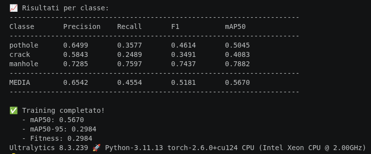
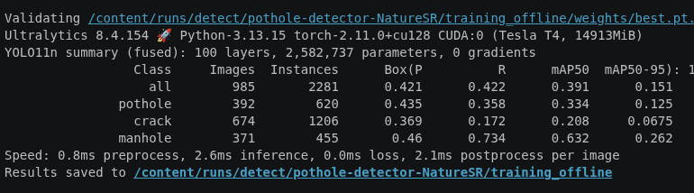
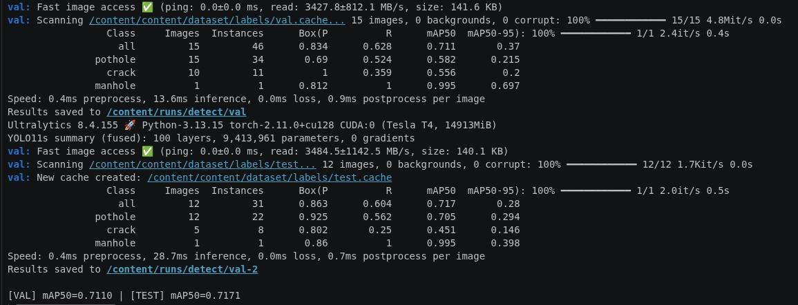
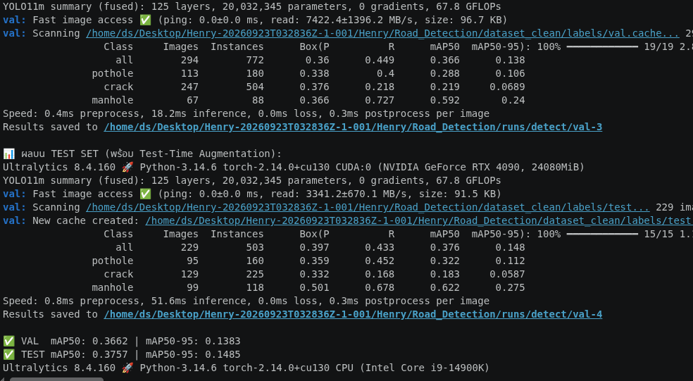
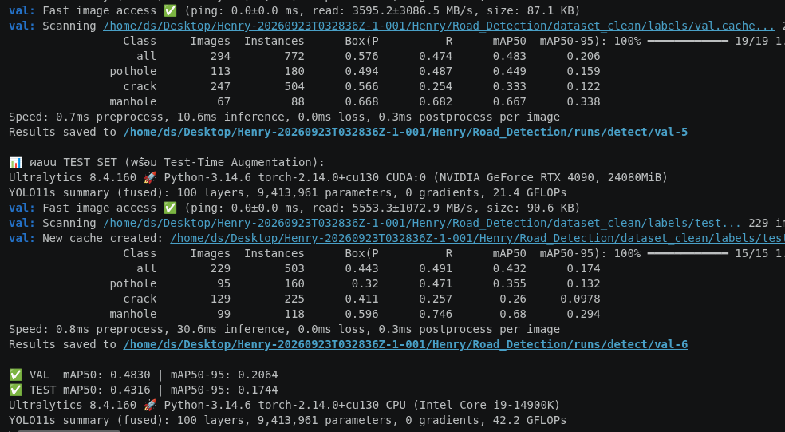
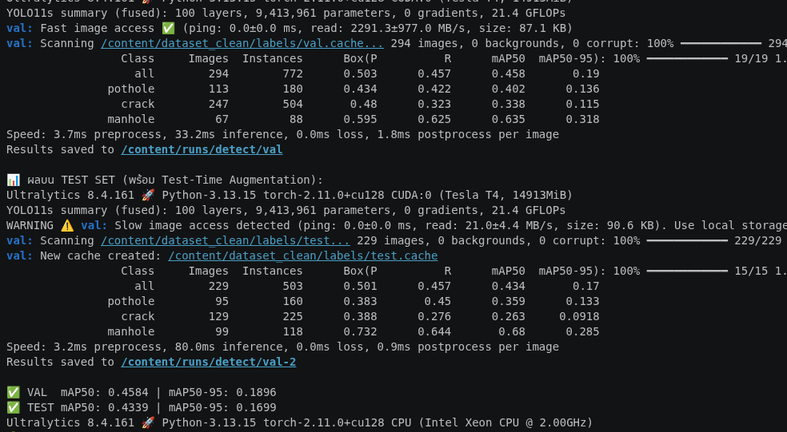
Which model performs best, and why.
Among versions evaluated on a consistent, properly split dataset (75/15/10 group-aware split, 229-image test set), v6 achieves the highest test-set mAP50 of 0.4339 and the best manhole precision of 0.732. It uses YOLO11s (lightweight 10M params) with higher resolution (960px), AdamW optimizer, and a clean, minimal augmentation strategy.
v5 scores nearly identically to v6 on the test set. It uses more augmentation (mixup=0.1, copy_paste=0.3, degrees=2) which can help generalize but may have slightly hurt the test score.
v3 used K-Fold CV and achieved 0.711 mAP50 on a 15-image val set. These are extremely small evaluation sets and should not be compared directly with v4–v6. If v3 is re-evaluated on a larger held-out set, it may prove superior.